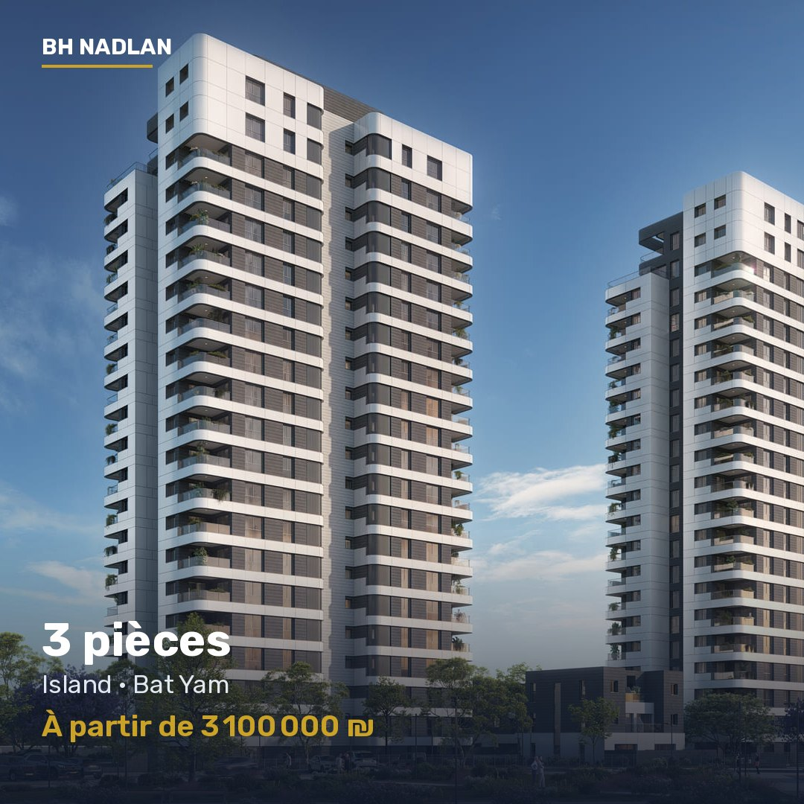

3 pièces, Island, Bat Yam
À partir de 3 100 000 ₪
- Ville
- Bat Yam
- Typologie
- 3 pièces
- Surface
- 82 m²
- Promoteur
- Promoteur reconnu
Programme neuf à Island, Bat Yam. Promoteur reconnu. Appartements de 3 pièces, 82 m². À partir de 3 100 000 ₪. BH Nadlan accompagne les acheteurs francophones du premier contact jusqu'à la remise des clés : sélection, négociation, avocat, banque et suivi du chantier.
Écrire sur WhatsApp